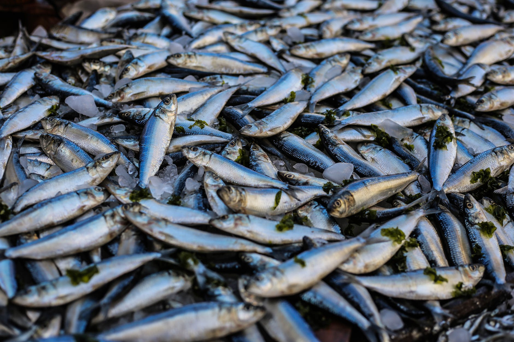

The first of the three music videos is related to the DO levels in water (more on DO later). The music video follows the lawsuit against a factory owner because a fish's father passed away due to the mischevious actions of the factory owner. The factory owner did something to the water from the factory that emptied into the fish's river, which in turn caused the fish's father to perish.